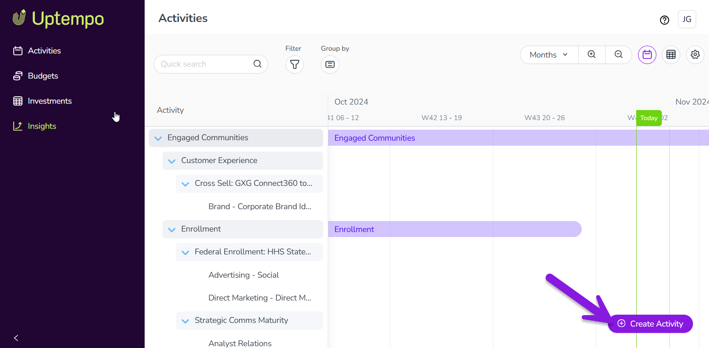

You can add new activities to the activity hierarchy at any time.
Create a new activity
In Uptempo, click Activities in the navigation sidebar.
In the Activities section, click Create Activity. The button is available on both the Timeline and Summary display modes: 
The Create Activity setup assistant opens with the Type page displayed.
On the Type page:
Use the Activity type list to select the type of activity you want to create from the available options. You can also type a keyword into the field to search for matching options.
Use the Parent list to select the activity under which you want to create this new activity in the hierarchy. You can also type a keyword into the field to search for matching options.
Click Next. The Details page is displayed.
On the Details page:
Enter a name for your new activity into the Name field.
Optional: To set the date range when this activity will be in-market, use the In-market Dates fields to choose a start and end date.
Depending on the activity type you selected, additional attribute fields may be displayed. Complete any other attributes as needed. If an attribute is marked with an asterisk (*), it is required and you must select or enter a value before you can proceed.
Click Next. The Budget page is displayed.
On the Budget page:
Optional: To enter a cost estimate for this activity, use the Estimated Costs field. For instructions, see Track and analyze activity budgets.
Optional: To connect this activity to an investment, click Add funding source. For instructions, see Connect investments to activities.
Click Next. The Impact page is displayed.
On the Impact page:
Optional: If the parent activity you selected for this activity allows child activities with impact data (or if the activity you're creating does not have a parent), you can configure the impact data here. For instructions, see Track and analyze pipeline impact.
Click Submit to finish creating the activity.
The Create Activity panel closes, and the new activity's details panel opens automatically.
To streamline the activity setup process, you can also create a new activity directly under any existing activity. When you do this:
The Parent field is automatically set to the appropriate parent activity (the activity under which you created the activity), so you don't need to set it manually.
The Activity type field is filtered to only show valid options for the selected parent activity, making it easier to choose the correct activity type.
Create a new activity as a child of an existing activity
There are two ways to create an activity directly as a child of another activity:
Method 1: In the Timeline or Summary display modes, hold the pointer on the activity under which you want to create the new activity. Click Add under.
Method 2: Click on the activity under which you want to create the new activity to open its details panel. Hold the pointer on Actions and click Add Under.
With both methods, the Create Activity setup assistant opens, with the Parent field preselected.
 Activities in the navigation sidebar.
Activities in the navigation sidebar. Create Activity. The button is available on both the Timeline and Summary display modes:
Create Activity. The button is available on both the Timeline and Summary display modes: {kind=link}
 Actions and click
Actions and click  Add Under.
Add Under.